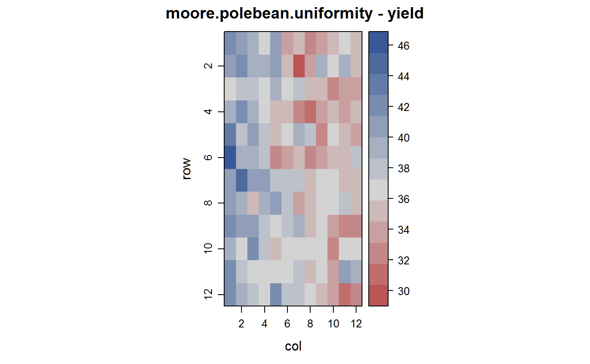
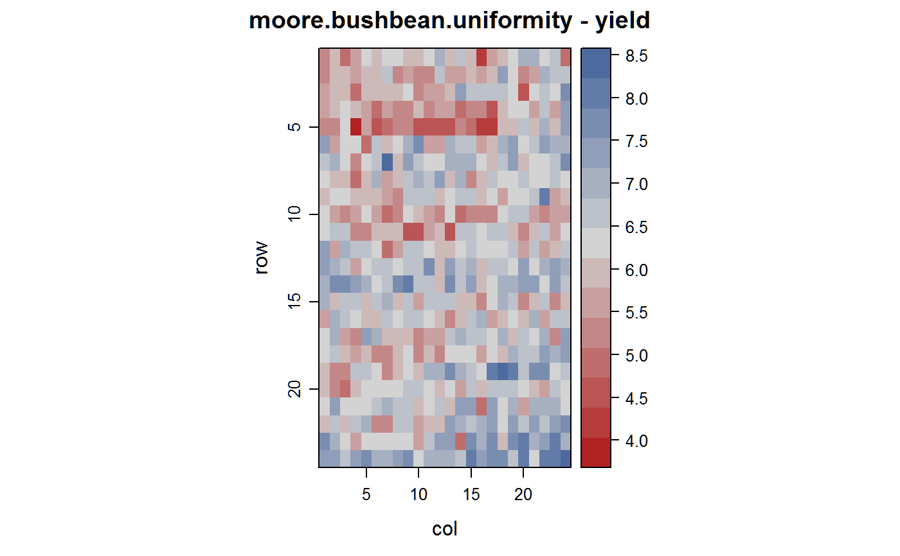
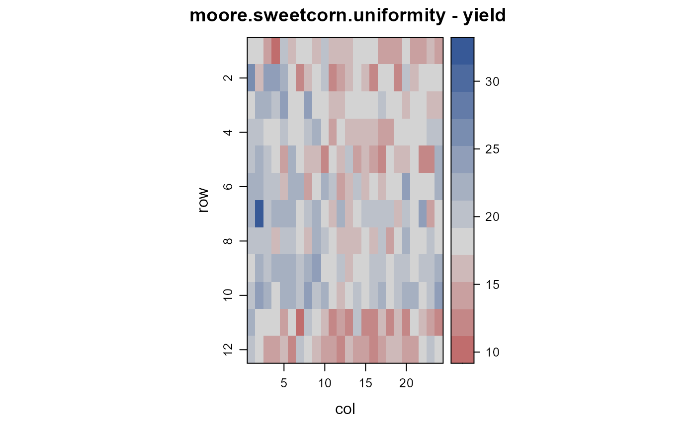
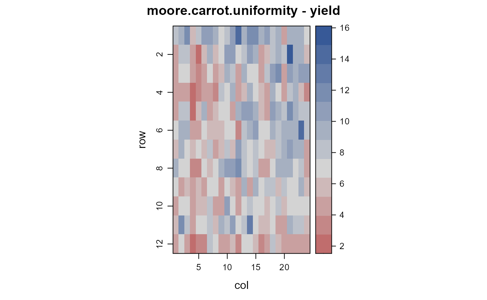
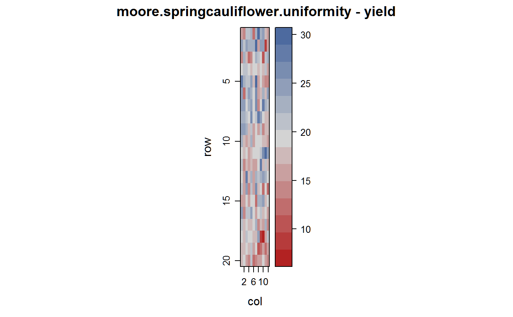
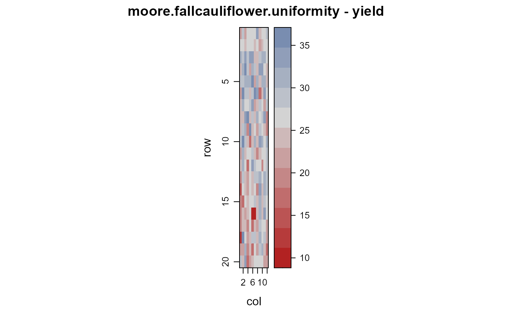

moore.uniformity.RdUniformity trials of pole beans, bush beans, sweet corn, carrots, spring and fall cauliflower at Washington, 1952-1955.
Each data frame has the following columns at a minimum. Some datasets have an additional trait column.
rowrow
colcolumn
yieldyield
All trials were grown on sandy loam soil in the Puyallup valley of Washington. In most experiments a gradient in soil fertility was evident. Moore & Darroch appear to have assigned 4 treatments to the plots and used the residual variation to calculate a CV. In the examples below a 'raw' CV is calculated and is always higher than the CV given by Moore & Darroch.
Blue Lake Pole Beans.
Conducted 1952. Seven pickings were made at about 5-day intervals. Table 26.
Field width: 12 rows x 5 feet = 60 feet.
Field length: 12 ranges x 10 feet = 120 feet.
Bush Beans.
Conducted in 1955. Two harvests. Table 27.
Field width: 24 rows x 3 feet = 72 feet.
Field length: 24 ranges x 5 feet = 120 feet.
Sweet Corn.
Conducted 1952. Table 28-29.
Field width: 24 rows x 3 feet = 72 feet.
Field length: 12 ranges x 10 feet = 120 feet.
Carrot.
Conducted 1952. Table 30.
Field width: 24 rows * 1.5 feet = 36 feet.
Field length: 12 ranges * 5 feet = 60 feet.
Spring Cauliflower.
Conducted spring 1951. Five harvests. Table 31-32.
Field width: 12 rows x 3 feet = 36 feet.
Field length: 10 plants * 1.5 feet * 20 ranges = 300 feet.
Fall Cauliflower.
Conducted fall 1951. Five harvests. Table 33-34.
Field width: 12 rows x 3 feet = 36 feet.
Field length: 10 plants * 1.5 feet * 20 ranges = 300 feet.
Moore, John F and Darroch, JG. (1956). Field plot technique with Blue Lake pole beans, bush beans, carrots, sweet corn, spring and fall cauliflower. Washington Agricultural Experiment Stations, Institute of Agricultural Sciences, State College of Washington.
None.
library(agridat) cv <- function(x) sd(x)/mean(x) libs(desplot) # Pole Bean data(moore.polebean.uniformity) cv(moore.polebean.uniformity$yield) # 8.00. Moore says 6.73.#> [1] 0.07998926desplot(yield~col*row, moore.polebean.uniformity, flip=TRUE, tick=TRUE, aspect=120/60, # true aspect main="moore.polebean.uniformity - yield")# Bush bean data(moore.bushbean.uniformity) cv(moore.bushbean.uniformity$yield) # 12.1. Moore says 10.8#> [1] 0.1209518desplot(yield~col*row, moore.bushbean.uniformity, flip=TRUE, tick=TRUE, aspect=120/72, # true aspect main="moore.bushbean.uniformity - yield")# Sweet corn data(moore.sweetcorn.uniformity) cv(moore.sweetcorn.uniformity$yield) # 17.5. Moore says 13.6#> [1] 0.1746622desplot(yield~col*row, moore.sweetcorn.uniformity, flip=TRUE, tick=TRUE, aspect=120/72, # true aspect main="moore.sweetcorn.uniformity - yield")## desplot(ears~col*row, moore.sweetcorn.uniformity, ## flip=TRUE, tick=TRUE, aspect=120/72, # true aspect ## main="moore.sweetcorn.uniformity - ears") ## libs(lattice) ## xyplot(yield ~ ears, moore.sweetcorn.uniformity) libs(desplot) # Carrot data(moore.carrot.uniformity) cv(moore.carrot.uniformity$yield) # 33.4. Moore says 27.6#> [1] 0.3345489desplot(yield~col*row, moore.carrot.uniformity, flip=TRUE, tick=TRUE, aspect=60/36, # true aspect main="moore.carrot.uniformity - yield")libs(desplot) # Spring cauliflower data(moore.springcauliflower.uniformity) cv(moore.springcauliflower.uniformity$yield) # 21. Moore says 19.5#> [1] 0.2100339desplot(yield~col*row, moore.springcauliflower.uniformity, flip=TRUE, tick=TRUE, aspect=300/36, # true aspect main="moore.springcauliflower.uniformity - yield")## desplot(heads~col*row, moore.springcauliflower.uniformity, ## flip=TRUE, tick=TRUE, aspect=300/36, # true aspect ## main="moore.springcauliflower.uniformity - heads") ## libs(lattice) ## xyplot(yield ~ heads, moore.springcauliflower.uniformity) libs(desplot) # Fall cauliflower data(moore.fallcauliflower.uniformity) cv(moore.fallcauliflower.uniformity$yield) # 17.7. Moore says 17.0#> [1] 0.1772603desplot(yield~col*row, moore.fallcauliflower.uniformity, flip=TRUE, tick=TRUE, aspect=300/36, # true aspect main="moore.fallcauliflower.uniformity - yield")## desplot(heads~col*row, moore.fallcauliflower.uniformity, ## flip=TRUE, tick=TRUE, aspect=300/36, # true aspect ## main="moore.fallcauliflower.uniformity - heads") ## libs(lattice) ## xyplot(yield ~ heads, moore.fallcauliflower.uniformity)